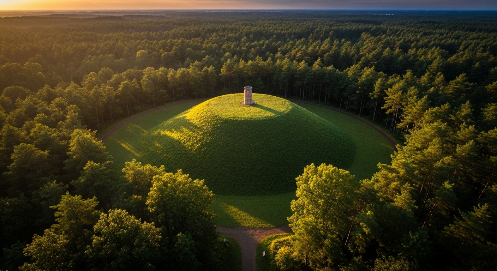
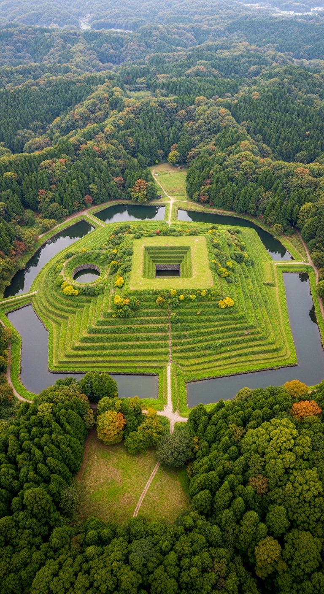
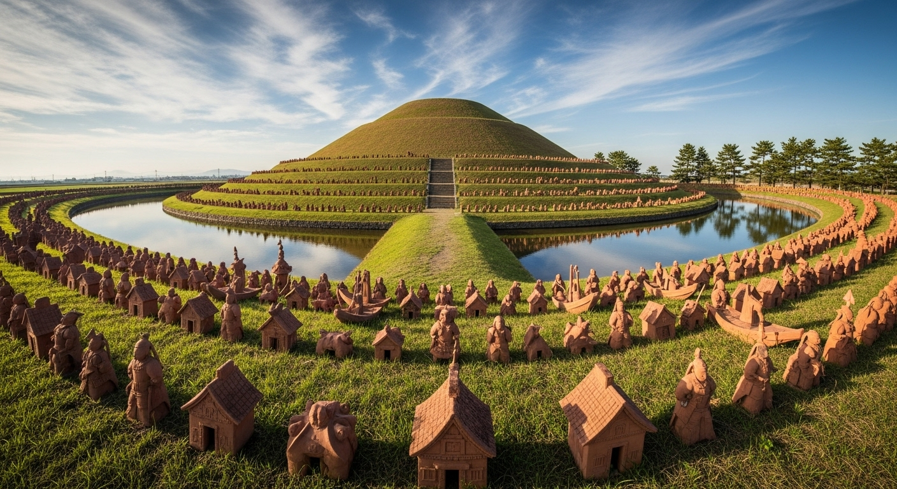

首長級
| 施工日数 | 約3ヶ月～6ヶ月 |
| 墳丘の規模 | 直径/一辺 10m～30m 程度 (一般的な中型規模) |
| 基本の形 | 円墳または方墳 |
| 埴輪の数 | 100本～300本程度 (シンプルな円筒埴輪が主体) |
| 副葬品 | 少量～中量 (日常品や武具など、ご指定に応じて) |
| おすすめ | 個人的な記念や、プライベートなシンボルを築きたい方へ。 初めての古墳づくりに最適です。 |

大王級
| 施工日数 | 約1年～2年 |
| 墳丘の規模 | 全長 50m～150m 程度 (地域の大首長クラスの規模) |
| 基本の形 | 帆立貝式古墳、または小型の前方後円墳 |
| 埴輪の数 | 500本～1,500本程度 (家型・器財・人物埴輪など種類が豊富に) |
| 副葬品 | 中量～多量 (鏡・玉類・豪華な武具など、威信財を含む) |
| おすすめ | 広い敷地を活かし、圧倒的な存在感と威厳を表現したい方へ。複雑な設計と装飾が可能です。 |

帝級
| 施工日数 | 約3年～5年 |
| 墳丘の規模 | 全長 200m～ (日本の歴史を塗り替えるような最大級の規模) |
| 基本の形 | 巨大な前方後円墳 (上円下方墳など特殊な形も要相談) |
| 埴輪の数 | 数千本～1万本以上 (精巧な形象埴輪による大規模な配列を実現) |
| 副葬品 | 極めて多量・最高級 (国宝級のレプリカや特注品の制作を含む) |
| おすすめ | 予算を度外視し、歴史に名を残す、人類史上最大級のモニュメントを築きたい方へ。ランドマークとしての地位を確立します。 |